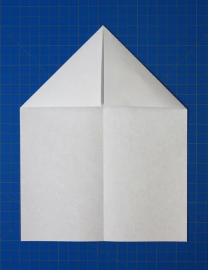
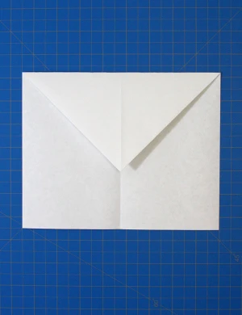
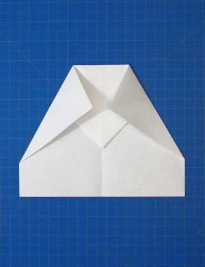
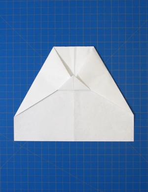
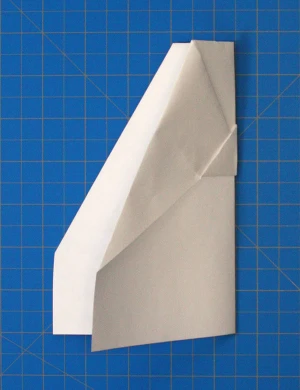

1Step 1
Crease the sheet down the middle.
Crease the sheet down the middle.

Open the sheet, then tuck both top corners into the midline.

Fold the tip down so the top becomes a square.

Bring both top corners in about 1 inch (2.5 cm) above the downward tip, making a triangle on top and a diamond below.

Fold the downward tip up to lock the flaps in place.

Close the plane away from you and press it flat.

Fold the edges down to create the wide wings as shown in the guide.
With a calm day and a level throw, expect roughly 8–10 metres (about 26–33 feet). Among the 37 distance-rated designs in this collection it ranks #35. Wind, paper weight, and small crease errors all change the result.
A well-trimmed Wide-Loop Floater should hold about 5–7 seconds of hang time. That places it #10 of 36 designs for time aloft. Launching from a higher spot and keeping the wings level will extend it.
It is best for long floating glides. Folding skill is beginner. Use Letter & A4, 7 steps, hands only.
Launch softly at a slight upward angle, ideally from a high point, and let the plane glide instead of forcing it.